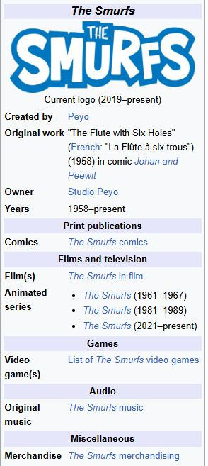
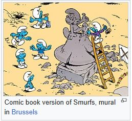
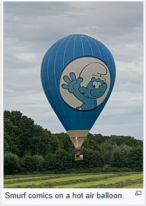

THE SMURFS

The Smurfs (French: Les Schtroumpfs; Dutch: De Smurfen) is a Belgian comic franchise centered on a fictional colony of small, blue, humanoid creatures who live in mushroom-shaped houses in the forest. The Smurfs was created and introduced as a series of comic characters by the Belgian comics artist Peyo (the pen name of Pierre Culliford) in 1958, wherein they were known as Les Schtroumpfs.
There are more than 100 Smurf characters, and their names are based on adjectives that emphasise their characteristics, such as "Jokey Smurf", who likes to play practical jokes on his fellow Smurfs. "Smurfette" was the first female Smurf to be introduced in the series. The Smurfs wear Phrygian caps, which came to represent freedom during the modern era.
The word "smurf" is the original Dutch translation of the French "schtroumpf", which, according to Peyo, is a word he invented during a meal with fellow cartoonist André Franquin when he could not remember the word salt.
The Smurfs franchise began as a comic and expanded into advertising, films, TV series, ice capades, video games, theme parks, and toys. By 2008, the franchise had generated $4 billion in revenue, making The Smurfs one of the highest-grossing media franchises of all time.
Origin
At the time he came up with the idea for the Smurfs, Peyo was the creator, artist, and writer of the Franco-Belgian comics series titled Johan et Pirlouit (translated to English as Johan and Peewit), set in Europe during the Middle Ages and including elements of sword-and-sorcery. Johan serves as a brave young page to the king, and Peewit (called Pirlouit (pronounced Peer-loo-ee) in the original French version) functions as his faithful, if boastful and cheating, midget sidekick. In 1958, Spirou magazine started the prepublication of the new Johan et Pirlouit comic book La Flûte à six trous ("The Flute with Six Holes"). The adventure involved their recovery of a magic flute, which required some sorcery by the wizard Homnibus. In this manner, they met a tiny, blue-skinned humanoid in white clothing called a "Schtroumpf", followed by his numerous peers who looked just like him, with an elderly leader who wore red clothing and had a white beard. Their first full appearance was published in Spirou on October 23, 1958. The characters proved to be a huge success, and the first independent Smurf stories appeared in Spirou in 1959, together with the first merchandising. The Smurfs shared more adventures with Johan and Pirlouit, got their own series and all subsequent publications of the original story were retitled La Flûte à six Schtroumpfs (also the title of the movie version of the story).
With the commercial success of the Smurfs came the merchandising empire of Smurf miniatures, models, games, and toys. Entire collecting clubs have devoted themselves to collecting PVC Smurfs and Smurf merchandise.
Name
Schtroumpf is pronounced like the German word "Strumpf" meaning "sock". However, according to Peyo, the original author of the Smurfs comic strip, the term and the accompanying language of the Smurfs came during a meal he had with his colleague and friend André Franquin at the Belgian coast. Having momentarily forgotten the word "salt", Peyo asked him (in French) to pass the schtroumpf. Franquin jokingly replied, "Here's the Schtroumpf—when you are done schtroumpfing, schtroumpf it back..." and the two spent the rest of that weekend speaking in "schtroumpf language".
Both the comics and cartoons have been translated in many languages. In most cases, the original name "Schtroumpf" is replaced by a new term. The most common are variations of the Dutch translation "Smurf", which is also used as the name in English. However, other names are indicative of their gnome-like appearance.
In English, they were briefly named the goblins in the book Dilly Duckling and the Goblins (1973) before being renamed the Smurfs.
In Spanish, they are called Pitufos, a term invented by Miguel Agustí who was the head of the Spanish magazine Strong, which first published the cartoon in Spanish. According to Agustí, he was walking around Barcelona while trying to come up a name for the cartoon. He came across a sculpture of the Ox of Patufet and was inspired by the word Patufet. From the Catalan Patufet he derived the non-existent word Pitufo. (Catalans themselves use the term Barrufet, formerly used to mean goblin or gnome, to avoid confusion with their own Patufet.) The name later spread to most Spanish-language versions of the cartoon.
In Hebrew, the name chosen was "Dardasim" (דרדסים), originally an old-fashioned Hebrew term for a slipper which due to the series' success in Israel has now gone completely out of use in its original sense.[citation needed]
Worldwide, there are about 55 translations of the word Schtroumpf, includin
Smurfs Universe
Smurfs
The storylines tend to be simple tales of bold adventure. The cast has a simple structure as well: almost all the characters look essentially alike—mostly male (a few female Smurfs have appeared: Smurfette, Sassette, and Nanny Smurf), short ("three apples high"), with blue skin, white trousers with a hole for their short tails, white hat in the style of a Phrygian cap, and sometimes some additional accessory that identifies a personality (for example, "Handy Smurf" wears overalls instead of the standard trousers, a brimmed hat, and a pencil above his ear). Smurfs can walk and run, but often move by skipping on both feet. They love to eat sarsaparilla (a species of Smilax) leaves, whose berries the Smurfs naturally call "smurfberries". The smurfberries appear only in the cartoon; in the original comics, the Smurfs only eat the leaves from the sarsaparilla. The Smurfs fulfill simple archetypes of everyday people: "Lazy Smurf", "Grouchy Smurf", "Brainy Smurf", and so on. All Smurfs, with the exception of Papa, Baby, Smurfette, Nanny and Grandpa, are said to be 100 years old. There were originally 99 Smurfs, but this number increased as new Smurf characters appeared, such as Sassette and Nanny. All of the original Smurfs were male; later female additions are Smurfette and Sassette. Smurfette was Gargamel's creation, while Sassette was created by the Smurflings
Language
A characteristic of the Smurf language is the frequent use of the undefinable word "smurf" and its derivatives in a variety of meanings. The Smurfs frequently replace both nouns and verbs in everyday speech with the word "smurf": "We're going smurfing on the River Smurf today". When used as a verb, "to smurf" typically means "to make", "to be", "to like", or "to do".
Humans have found that replacing ordinary words with the term "smurf" at random is not enough: in one adventure, Peewit explains to some other humans that the statement "I'm smurfing to the smurf" means "I'm going to the wood", but a Smurf corrects him by saying that the proper statement would be "I'm smurfing to the smurf"; whereas what Peewit said was "I'm warbling to the dawn". So "I'm smurfing to the smurf" is not the same as "I'm smurfing to the smurf".
In the animated series, only some words (or a portion of the word) are replaced with the word "smurf". Context offers a reliable understanding of this speech pattern, but common vocabulary includes remarking that something is "just smurfy" or in some cases, "smurftastic".
In Schtroumpf vert et vert Schtroumpf (see Smurf Versus Smurf), published in Belgium in 1972, it was revealed that the smurf village was divided between North and South, and that the Smurfs on either side had different ideas as to how the term "smurf" should be used: for instance, the Northern Smurfs called a certain object a "bottle smurfer", while the Southern Smurfs called it a "smurf opener". This story is considered a parody on the still ongoing taalstrijd (language war) between French- and Dutch-speaking communities in Belgium
Smurf village
When they first appeared in 1958, the Smurfs lived in a part of the world called "Le Pays Maudit" (French for "the Cursed Land"). To reach it required magic or travelling through dense forests, deep marshes, a scorching desert and a high mountain range.The Smurfs themselves use storks in order to travel long distances, such as to the kingdom where Johan and Pirlouit live, and keep up-to-date with events in the outside world.
In the Johan et Pirlouit stories, the Smurf village is made up of mushroom-like houses of different shapes and sizes in a desolate and rocky land with just a few trees. However, in the Smurf series itself, the mushroom-like houses are more similar to one another and are located in a clearing in the middle of a deep forest with grass, a river, and vegetation. Humans such as Gargamel are shown to live nearby, though it is almost impossible for an outsider to find the Smurf village except when led by a Smurf
Characters
Papa Smurf is the leader of the community. Other Smurfs are generally named in reference to their main personality trait; for example, Brainy, Greedy, Vanity, Lazy, Clumsy, Hefty, Jokey, Dreamy, Grouchy; or their profession; for example, Poet, Actor, Handy, Harmony, Farmer, Clockwork, Painter, Tailor, Miner, Architect, Reporter, Timber, Barber and Doctor Smurf; much like Disney's Seven Dwarfs. The first female Smurf, Smurfette, was created by Gargamel to lure the other Smurfs. Papa Smurf then changed her into what we see today. The non-Smurf characters who would appear later would include their enemies: the wizard Gargamel, his cat Azrael, an ugly witch Hogatha, and Gargamel's godfather Balthazar; and their friends: the page Johan and his young friend Peewit, and the wizard Homnibus. There are more than 100 Smurfs
Smurf Comics
Since the first appearance of the Smurfs in Johan et Pirlouit in 1958, more than 40 Smurf comics volumes have been created, 16 of them by Peyo, the others by his studio. Originally, the Smurf stories appeared in Spirou magazine with reprints in many different magazines, but after Peyo left the publisher Dupuis, many comics were first published in dedicated Smurf magazines, which existed in French, Dutch, German and Turkish. A number of short stories and one page gags have been collected into comic books next to the regular series. English translations have been published in the U.S. by the graphic novel publisher Papercutz as well as a mini series published by Marvel Comics in the mid-1980s.
Peyo's drawing style is similar to his fellow cartoonists from the Marcinelle school.The emphasis is on movement, enhanced by the use of Indian ink, with comic aspects regularly appearing. This style was approached by his successors, although there are also differences
Other media
Films

In 1965, a black-and-white 87-minute animated film called Les Aventures des Schtroumpfs was released in theatres in Belgium. It consisted of five short cartoons made in the previous years for broadcasting on Walloon TV. German copies and copies with Dutch subtitles are known to exist. The stories were based on existing Smurf stories like The Black Smurfs and The Smurfs and the Egg, and were created by writer Maurice Rosy and artist Eddy Ryssack from the small Dupuis animation studios. In total, ten animated shorts were created between 1961 and 1967, the first series in black and white and the later ones in colour.
In 1976, La Flûte à six schtroumpfs (an adaptation of the original "Johan et Pirlouit" story) was released. Michel Legrand provided the musical score to the film. The film would be released in the United States in 1983 (after the animated series became popular there) in an English language dubbed version titled The Smurfs and the Magic Flute. A few more full-length Smurf films were made, most notably The Baby Smurf and Here are the Smurfs. created from episodes of the Hanna-Barbera television cartoon series.
Sony Pictures announced plans to begin a trilogy of live-action/animated Smurf films, with the first film released on July 29, 2011;the project had been in various stages of development since 2003.In June 2008, it was announced that Columbia Pictures and Sony Pictures Animation had acquired film rights from Lafig Belgium. Jordan Kerner produced the film, with the screenwriters including Shrek 2 and Shrek the Third screenwriters J. David Stem and David N. Weiss.The film stars Jonathan Winters as Papa Smurf, Katy Perry as Smurfette, George Lopez as Grouchy Smurf, Gary Basaraba as Hefty Smurf, John Oliver as Vanity Smurf, Alan Cumming as Gutsy Smurf, Paul Reubens as Jokey Smurf, Hank Azaria as Gargamel, Neil Patrick Harris as Patrick Winslow and Jayma Mays as Grace Winslow, a couple in New York who help the Smurfs get back to their village. It was suggested that Quentin Tarantino would play Brainy Smurf, but this "didn't work out" so Fred Armisen voices Brainy instead. A CGI/traditionally animated mini-film, titled The Smurfs: A Christmas Carol, was released on December 2, 2011, on The Smurfs DVD and Blu-ray. A sequel to The Smurfs, titled The Smurfs 2, was released on July 31, 2013. A fully animated Smurfs reboot film, Smurfs: The Lost Village, was released on April 7, 2017, with Demi Lovato starring as Smurfette.
At CinemaCon on August 25, 2021, it was announced that a new Smurfs movie is in the works. The movie will be a musical and it is planned for a December 20, 2024 release for Paramount Pictures and Nickelodeon.In August 2022, Paramount Pictures announced that the movie was pushed back to February 14, 2025, with Sonic the Hedgehog 3 taking its previous release date.On October 2024, it was further delayed to July 18, 2025
Television series
The Smurfs secured their place in North American pop culture in 1981, when the Saturday morning cartoon series The Smurfs, produced by Hanna-Barbera Productions in association with SEPP International S.à.r.l., aired on NBC from September 12, 1981, to December 2, 1989 (reruns until August 25, 1990). The show continued to air on the USA network until 1993, and on Cartoon Network until 2003. The Smurfs is still broadcast on the Boomerang channel throughout the United States. The show became a major success for NBC, spawning spin-off television specials on an almost yearly basis. The Smurfs was nominated multiple times for Daytime Emmy awards, and won Outstanding Children's Entertainment Series in 1982–1983.The Smurfs television show enjoyed continued success until 1990, when, after nearly a decade of success, NBC cancelled it due to decreasing ratings and plans to extend their Today morning show franchise to create a Saturday edition, although they did not do so until 1992, two years later. The decreased ratings were the result of the network changing the format of the show, resulting in the final season featuring regular time travel with only a few Smurfs.
In the TV series, many classical masterpieces are used as background music during the episodes, among them Franz Schubert's Unfinished Symphony (Symphony No. 8 in B minor), Edvard Grieg's Peer Gynt and Modest Mussorgsky's Pictures at an Exhibition.
The Smurfs was named the 97th best animated series by IGN. It has been called "kiddie cocaine" for people growing up during the 1980s.
On August 31, 2017, it was announced that IMPS and Dupuis Audiovisuel would be working on the new Smurfs TV series with CGI animation. The series was scheduled for 2020 but postponed to 2021. It is co produced by Ketnet (Flanders), TF1 (France), KiKa (Germany),OUFTIVI (Wallonia), Peyo Productions, and Dupuis Audiovisuel (the TV branch of the comics publisher). It shows new stories, not adaptations of comics or other older stories.Nickelodeon picked up the series for a 2021 release in the United States.
Home media
On February 26, 2008, Warner Home Video released Season 1 Volume 1 on DVD, containing the first 19 episodes. On October 7, 2008, Warner Bros. released Season 1 Volume 2 on DVD, containing the remaining 20 episodes from season 1. Though Warner Bros. has decided to discontinue the season sets and release single-disc volume sets instead, they are reportedly still following the correct order of episodes.
Magna Home Entertainment in Australia has released a 9-disc 50th Anniversary Collection, containing a total of 52 episodes.[citation needed] In September 2009, a Smurfette-themed collection containing 25 episodes was made available followed by the "Papa Smurf Collection" in December 2009 containing 26 themed episodes. In July 2010, both the Smurfette and Papa Smurf Collection were included in a special 'Favourites Collection'.Also releasing at the same time was the Smurfs' first feature film (produced in 1975), The Smurfs and the Magic Flute, available for the first time on DVD, in Australia.
On November 3, 2010, two "Just Smurfy" collections were released, each featuring episodes not yet released on DVD to the Australian market. December 3, 2010 saw the 3rd collection hit the market. A fourth Just Smurfy set was planned for release on March 2, 2011.
Magna Home Entertainment in Australia have released Season 1 and Season 2 on August 24, 2011. Season 3and Season 4 was released on October 5, 2011. A limited edition "Ultimate Collection 1",which features the first five seasons, was released on August 24, 2011. An "Ultimate Collection 2", which features Season 6 to Season 9, was released on November 2, 2011.
The show was released on DVD in the UK through a joint conjunction with Arrow Films and Fabulous Films Ltd. The complete 1st season was released in a four-disc box set on July 5, 2010. Season 2 was released on September 6, 2010, Seasons 3, 4 and 5 were released on July 1, 2013, and the original Smurfs feature film, The Smurfs and The Magic Flute, was released on DVD and Blu-ray on October 11, 2010.
Crossovers
Papa Smurf, Hefty Smurf, and Brainy Smurf appeared in the cartoon crossover Cartoon All-Stars to the Rescue along with Bugs Bunny and Daffy Duck (from the Looney Tunes franchise), Huey, Dewey, and Louie (from DuckTales), Winnie the Pooh and Tigger, Garfield, Alvin and the Chipmunks, the Muppet Babies (Kermit, Piggy and Gonzo respectively), Slimer (from The Real Ghostbusters), ALF, and Michelangelo (from Teenage Mutant Ninja Turtles). Smurfette appeared on the promotional poster, but never[clarification needed] appeared in the actual film.
Merchandising
From 1959 until the end of the 1960s, Dupuis produced Smurf figurines. But the best known and most widely available Smurf figurines are those made by Schleich, a German toy company. Most of the Smurf figurines given away as promotional material (e.g. by National Garages in the 1970s and McDonald's in the 1990s) are also made by Schleich. New Smurf figures continue to appear; in fact, only in two years since 1969 (1991 and 1998) have no new Smurfs entered the market. Schleich currently produces 8 to 12 new figurines a year. Over 300 million of them have been sold so far.
Other Smurf figurines have been created for advertising purposes, e.g. worldwide for McDonald's and Kinder Surprise, or nationally for e.g. Albert Heijn in the Netherlands, and Delhaize in Belgium. Special Smurf comics were often created for advertising campaigns. This started in the 1960s for Kwatta and Kellogg's, and later for companies like BP in the UK and Australia, or Benco (a Dutch chocolate drink).These comics were often only part of a larger campaign, e.g. the Benco comics were accompanied by a TV ad.
A Smurf balloon/float/falloon (which is half float, half balloon) continues to be presented in holiday parades such as Macy's Thanksgiving Day Parade.
Smurfs had two cereals in the 1980s made by Post Cereals: Smurf-Berry Crunch cereal and Smurfs Magic Berries. Both had animated commercials on Saturday morning. Two Smurfs pastas, made by Chef Boyardee and DelVerde, were made in the 1980s as well. Also Libby's and Heinz came out with Smurf-A-Getti canned pasta for the American and Canadian market.
The Smurfs had a commercial in the 1980s for the Mexican snack cake company Marinela Submarinos with a rare version of Smurfette (Pitufina) dressed in a red dress and her hair done in pigtails.
Music recordings

Over the decades, many singles and albums of Smurf music have been released in different countries and languages, sometimes very successfully, with millions of copies sold. The best known is the single The Smurf Song and its accompanying album, created by Dutch musician Pierre Kartner who sang under the alias Father Abraham, which reached the #1 position in 16 countries. Worldwide, more than 10 million CDs with Smurf music have been sold between 2005 and 2007 alone.
In 1989, I.M.P.S and R-Tek Music, International created Smurfin!: Tenth Anniversary Commemorative Album, released by Quality Special Products in Canada and the United States and Dino Music in Australia. It was also released in parts of Europe. The Album came out on LP, CD and cassette. The LP featured 20 tracks (The Canadian CD and cassette had 16, the American CD had 10). The songs were covers of popular songs like "Surfin' U.S.A.", "Kokomo", "The Lion Sleeps Tonight", and "I Think We're Alone Now", as well as two original songs.
Smurfs on Ice
For several years, the Smurfs were the children's act in the Ice Capades travelling ice show. After they were retired from that function, the Smurf suits from the show were issued to Ice Capades Chalets, the show's subsidiary chain of ice rinks, lasting until the show was sold to a group of investors led by Dorothy Hamill. The Chalets were sold to Recreation World. The Smurfette suit in particular had a somewhat different hairstyle from what was portrayed in the Hanna-Barbera cartoons.
Smurfs in theme parks
In 1984, the Smurfs began appearing in North American theme parks owned by Kings Entertainment Corporation. Each park featured a Smurf attraction and Smurf walk-around figures. Canada's Wonderland had an entire Smurf village to walk through, ending with Gargamel's Castle. "The Smurfs' Enchanted Voyage" was located in Kings Island. Kings Dominion has "Smurf Mountain". California's Great America featured a pint-sized steel coaster, "The Blue Streak". Carowinds had an artificial island that was named Smurf Island that had a Smurf village—including toadstool houses which could be entered. Hanna–Barbera Land had a Smurf district.
In 1989, in the French region of Lorraine, the Sorépark group opened a complete Smurfpark, named Big Bang Schtroumpf. In 1991, the park was bought by the successful Belgian Walibi Group and renamed Walibi Schtroumpf with new attractions. After the Walibi Group was acquired by Six Flags, the park was named Walibi Lorraine, and all the Smurfs references in the park were removed in 2003.
Comics Station, Ankara Amusement Park, Motiongate Dubai, Movie Animation Park Studios, and Dream Island feature Smurf sections.
UNICEF
In 2005, an advertisement featuring The Smurfs was aired in Belgium in which the Smurf village is annihilated by warplanes.[62] Designed as a UNICEF advertisement, and with the approval of the family of the Smurfs' late creator Peyo, the 25-second episode was shown on the national television after the 9 p.m. timeslot to avoid children having to see it. It was the keystone in a fund-raising campaign by UNICEF's Belgian arm to raise money for the rehabilitation of former child soldiers in Burundi and the Democratic Republic of the Congo—both former Belgian colonies.
In honour of their 50th anniversary in 2008, the Smurfs began a year-long "Happy Smurfday Euro Tour" in connection with UNICEF. The Smurfs visited fifteen European countries on the day of their 50th "Smurfday" in the form of publicly distributed white figurines. The recipients could decorate and submit them to a competition. The results of this contest were auctioned off and raised a total amount of 124,700 euros for benefit of UNICEF.
Coins
The 50th anniversary of the Smurfs and the 80th anniversary of the birth of its creator Peyo, were celebrated by issuing a high-value collectors' coin: the Belgian 5 euro 50th anniversary of The Smurfs commemorative coin, minted in 2008.
Sociological discussion
In 1998, writer Marc Schmidt wrote a parody article citing the Smurfs as an example of the impact of socialism in continental European culture.[64][65] In 2011, Schmidt's essay was scrutinised in a response essay by Kate Krake, who examined the nature of cultural theory built on textual observation and warned against creating false allegories out of texts like The Smurfs.[66]
French sociologist Antoine Buéno described Smurf society in a 2011 book as a totalitarian and racist utopia with antisemitic tones.[67][68][69] Studio Peyo head Thierry Culliford, the son of Peyo, dismissed Buéno's accusations as "grotesque and frivolous".